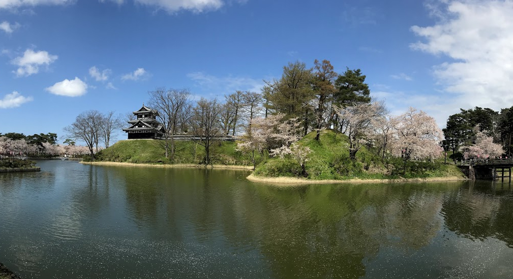

私の専門は、心理統計学とテスト理論です。 テストやアンケートなどの回答データをもとにして、人間の行動やその背後にある「こころの働き」をいかにして科学的に記述するかということに興味があります。
そもそも能力や性格といった心理的特性は「物」として存在するわけではなく、目に見える行動の変化や特徴を人間が理解するための概念に過ぎません。 ある集団では称賛されるふるまいが他の集団では批判されることがしばしばあるように、こうした心理的特性の捉え方は時代や文化によって大きく左右されます。 また、同じ人でも家族と同僚からは異なる印象を持たれるように、人はその場その場に適応するために様々な行動を使い分けることもあります。 これらのことから明らかなように、能力や性格を測るための「ものさし」はただ精度だけが問題になるのではなく、それを使って何を評価しようとしているのか、その中身を議論し合意形成を図っておくことが非常に重要です。
妥当な測定によってデータを集め、それにもとづいて議論をすることは科学的な姿勢として大切です。 しかし、ただデータを取ればそれが即エビデンスとして役立てられるわけではありません。 エビデンスの質はデータの集め方や分析方法に大きく左右されます。 そうした問題について深く考え、より質の高い心理学研究を生み出すような方策を考え提案することが、心理統計学やテスト理論の役割ということになります。
---- 事実を用いて科学を築くのは、石を用いて家を築くようなものである。 しかし、山積みの石が家でないのと同じように、事実の寄せ集めが科学であるというわけではない。(H. ポアンカレ)
現在、学部のゼミは学年暦に合わせて週に一度（火曜の午後）開催しています。
ゼミでは、メンバーが興味のある文献を読んで発表したり、研究の構想について意見を交換し合ったりします。 それ以外にも、論文や発表資料の添削や研究計画の相談など、必要に応じて個別対応も行っています。
これはどの研究室にも言えることだと思いますが、一人の教員がどのようなテーマについても精通しているということは現実的にありえません。 わからないこと、知らないことの方が多いのです。 私自身は、指導的な立場から研究について助言をするというよりも、学生さんが興味のある問題について一緒に興味を持ち、一緒に考えるというスタンスを大切にしています。 自分の頭で考える、自分の言葉でそれを伝える、そうした習慣をつけるために価値観を異にする他者と意見を交換し、議論をすることがゼミにおいて求められる活動だと考えています。
参考までに、これまでに指導した学位論文のタイトルを以下に紹介しておきます。
知的好奇心が旺盛で、自主的にいろいろなことを勉強しようとする姿勢が求められます。 専門的な知識も、それを支える分厚い教養があってこそ、社会に出たときに役立てることができます。 理想論だけではなく、現実を直視し、物事を論理的に考えようとする姿勢も重要です。
課外活動や就職活動と授業やゼミを両立させることは中々大変なことですが、しっかり寝てしっかり食べて、学生時代にしかできないことを精一杯やり遂げてください。（健康第一）
|  |